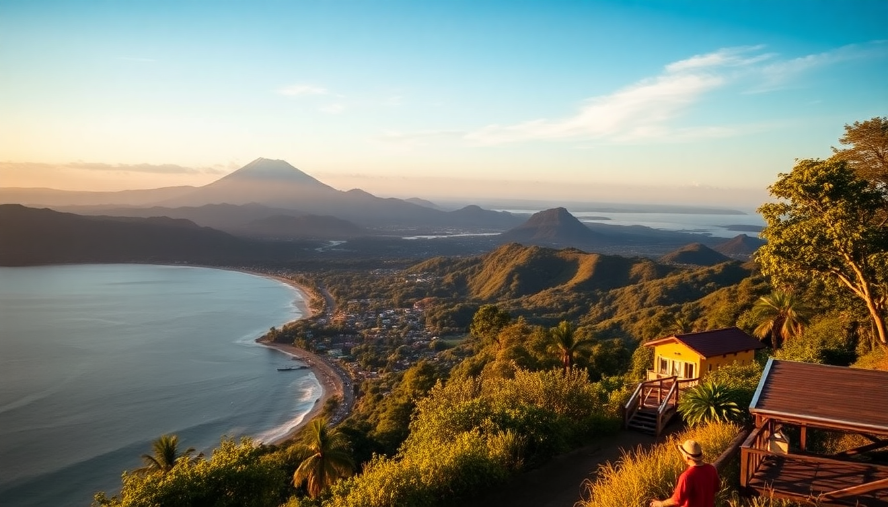

Best Day Trips from San José: Volcanoes, Waterfalls & Cloud Forests

You land in San José and the city’s traffic and concrete can make you wonder if you made a wrong turn. But the real Costa Rica starts about an hour outside the capital. I’ve done these day trips myself—some were worth the early alarm, others taught me to read the fine print on tour times. This guide covers the three most practical escapes: a smoking volcano, a series of waterfalls you can practically touch, and a cloud forest that changes how you think about green.
Why use San José as a base for day trips?
San José isn’t pretty, but it’s central. Most major attractions sit within a 2-hour drive, which means you can sleep in the city and be back for dinner. We stayed at Hotel Presidente in the Barrio Amón neighborhood—nothing fancy, but the location let us grab a taxi to the bus station in ten minutes. If you’re short on time (3–4 days in Costa Rica), basing yourself in San José beats switching hotels every night. Just know the traffic out of town peaks between 6:30 and 8:30 AM, so aim to leave by 6 AM or after 9 AM.
Is Poás Volcano worth the early wake-up?
Yes, but only if you go early. Poás Volcano National Park limits entry to 500 visitors per day and the crater often clouds over by 10:30 AM. I booked a GetYourGuide tour that picked us up at 5:30 AM from our hotel—painful, but we were at the crater by 7:15 AM with clear views of the turquoise acidic lake. The main crater is massive, almost a kilometer wide. By 9:30 AM, the fog rolled in and we couldn’t see twenty feet.
- Poás Volcano main crater viewpoint (arrive before 8 AM)
- Botos Lagoon trail—30-minute walk through dwarf cloud forest
- Souvenir stands at the entrance—skip the overpriced coffee
- La Paz Waterfall Gardens—often combined on the same tour (worth it)
If you drive yourself, the road from Alajuela is well-paved but winding. Parking is 5 USD. The park entrance fee is 15 USD for foreigners (cash only at the gate). Bring a rain jacket—even on clear mornings, the mist hits hard.
Can you visit La Paz Waterfall Gardens on your own?
You can, but the logistics are tricky without a car. The gardens are 45 minutes north of San José on Route 126. We took a shared shuttle from Hotel Presidente for 25 USD per person round-trip. The park itself is a private reserve with five major waterfalls you walk right up to—no railings between you and the plunge pool. The Magpie Falls viewpoint is the best photo spot, but the Templo Falls trail gets you closest to the spray.
- La Paz Waterfall Gardens entrance fee: 44 USD (includes butterfly observatory)
- Restaurant El Tigre inside the park—decent casado with rice, beans, and plantains for 12 USD
- Hummingbird garden—free to walk through, dozens of species buzzing inches from your face
- Poás Volcano combo tour—most operators bundle both for around 80 USD
One warning: the tour buses arrive in waves between 10 AM and noon. Go straight to the waterfalls first, then hit the aviary and butterfly house when the crowds thicken. We spent four hours here and felt it was enough.
What’s the best route to Monteverde from San José?
Monteverde is the longest day trip on this list—about 3 hours each way if you drive. We rented a 4x4 from Alamo at Juan Santamaría Airport for 55 USD per day. The road from San José to Puntarenas is smooth, but the final 20 km up the mountain is unpaved gravel with switchbacks. A sedan can do it in dry season, but after rain the potholes get deep.
- Route 606 (the gravel road)—allow 45 minutes for the final stretch
- Santa Elena town—base for food and supplies before entering the reserve
- Monteverde Cloud Forest Biological Reserve entrance fee: 25 USD
- Curi-Cancha Reserve—quieter alternative with better birding, 20 USD
If you don’t want to drive, Transmonteverde runs daily shuttles from San José for 45 USD per person. They leave from the Gran Hotel Costa Rica at 7 AM and return by 5 PM. Tight schedule, but doable if you skip the hanging bridges tour and just hike the main reserve trails.
Should you do hanging bridges or zip-lining in Monteverde?
Do one, not both, unless you have two days. I chose the Selvatura Park hanging bridges (50 USD) over zip-lining because I wanted to walk through the canopy slowly. The bridges are eight suspension spans, the longest about 300 feet. You see howler monkeys and toucans if you’re quiet. Zip-lining at 100% Aventura gets better reviews than Selvatura’s lines—longer runs, faster speeds, but more tourists.
- Selvatura Park hanging bridges—less crowded before 9 AM
- 100% Aventura zip-line—includes the “Tarzan Swing” free-fall
- Monteverde Cheese Factory—touristy but the fresh mozzarella is legit
- Stella’s Bakery in Santa Elena—best coffee and pastries before a hike
My honest take: if you’ve done zip-lining anywhere else, skip it here and do the bridges. The cloud forest is the star, not the adrenaline.
What are the best budget-friendly day trips from San José?
Not every day trip needs a tour operator. The San José Central Market (Mercado Central) is a free walk-through of local life—try the churros at Churrería Manuel for 1 USD. For a cheap nature fix, Braulio Carrillo National Park is 45 minutes northeast and costs 10 USD to enter. The trails are rougher than La Paz, but you’ll see fewer people.
- Mercado Central—open 6 AM to 6 PM, cash only
- Braulio Carrillo National Park—take the Guápiles Highway, park at the Quebrada González ranger station
- Sarchí town—30 minutes west, famous for painted oxcarts and woodworking
- Orosi Valley—1.5 hours southeast, hot springs and a colonial church
We spent a half-day in Sarchí and bought a small painted oxcart for 30 USD—haggled down from 45. The drive through the countryside is the real draw.
FAQ
How many day trips can I realistically do from San José in one week? Three, max. I did Poás/La Paz on one day, Monteverde on another, and Braulio Carrillo on a third. Any more and you’ll spend half your trip in transit. Rest days matter—Costa Rica’s sun and humidity drain you faster than you expect.
Do I need to book tours in advance for these day trips? For Poás Volcano, yes—the park caps visitors and tours sell out 2–3 days ahead. For La Paz and Monteverde, you can book the night before through your hotel or a site like GetYourGuide. Driving yourself removes the booking pressure but adds navigation stress.
What should I pack for a day trip from San José? Rain jacket (non-negotiable), closed-toe shoes with grip, insect repellent with DEET, a refillable water bottle, and cash in small denominations (colones or dollars). Most parks don’t take cards. Leave the umbrella behind—it’s useless in wind and gets in the way on narrow trails.
Conclusion
- Poás Volcano works best as a sunrise mission—be at the crater by 7:30 AM or skip it.
- La Paz Waterfall Gardens delivers on spectacle but feels managed; go early to beat tour buses.
- Monteverde is worth the bumpy drive for the cloud forest alone, but skip the zip-line if you’ve done one before.
- Budget option: Braulio Carrillo or Sarchí town for under 20 USD total.
- One rule: never plan two long drives in a row. Your back and your patience will thank you.